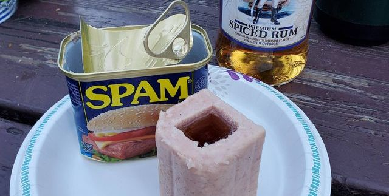

Spam Shot Glass

Description
Who needs lime and some salt to chase down that tequilla? It's 2022, we use pork(?) and the salt held within the premier meat known as SPAM. Let's get to it.
Ingredients
- 1 shot of tequilla
- 1 can of Spam
- 1 knife
Steps
- Open the spam and whittle it down to the appropriate shape using your knife
- Pour a heaping shot into the edible shot "glass"
- Throw that whole thing in your mouth and enjoy!